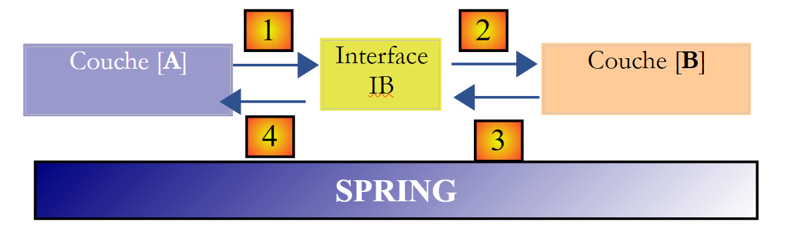

4. [TD]: البنى الطبقية
الكلمات المفتاحية: بنية متعددة الطبقات، Spring، حقن التبعية.
4.1. مقدمة
دعونا نستعرض ما قمنا به:
- في الجزء الأول من تمرين ELECTIONS، لم يتم استخدام أي فئات. قمنا ببناء حل كما كنا سنبنيه بلغة C.
- في الجزء الثاني من التمرين، تم تقديم فئتين:
- [VoterList]، التي تمثل سمات (id، name، votes، seats، eliminated) قائمة المرشحين
- [ElectionsException]، وهي فئة للاستثناءات غير المعالجة. يُستخدم هذا النوع من الاستثناءات كلما حدث خطأ فادح في تطبيق الانتخابات. وهو غير معالج، مما يعني أن المطور غير مطالب بمعالجته باستخدام كتلة try-catch.
حتى الآن، كان حساب نتائج الانتخابات يتم من خلال طريقة [main] لفئة [MainElections]
يتضمن الحل السابق ثلاث مراحل قياسية:
- جمع البيانات، السطور 17-18
- حساب الحل، السطور 19-20
- عرض و/أو حفظ النتائج، السطور 21-22
المرحلة 2 هي الوحيدة الثابتة حقًا. يمكن أن تختلف المرحلة 1: يمكن أن تأتي البيانات من لوحة المفاتيح كما في الأمثلة التي تمت دراستها، أو من ملف نصي، أو من واجهة رسومية، أو من قاعدة بيانات، أو من الشبكة، ... وبالمثل، هناك طرق متعددة لإخراج النتائج في المرحلة 3: عرضها على الشاشة كما في الأمثلة التي تمت دراستها، أو حفظها في ملف، أو في قاعدة بيانات، أو إرسالها عبر الشبكة، إلخ.
بشكل عام، يمكن غالبًا نمذجة التطبيق على أنه ثلاث طبقات، لكل منها دور محدد جيدًا:
 |
تُعرف هذه البنية أيضًا باسم «البنية ثلاثية المستويات». ويشير مصطلح «ثلاثية المستويات» عادةً إلى بنية يكون فيها كل مستوى موجودًا على جهاز مختلف. وعندما تكون المستويات موجودة على نفس الجهاز، تصبح البنية «ثلاثية الطبقات».
- تحتوي الطبقة [التجارية] على القواعد التجارية للتطبيق. بالنسبة لتطبيق الانتخابات الخاص بنا، هذه هي القواعد التي تحسب المقاعد التي فازت بها القوائم المختلفة بمجرد معرفة الأصوات التي حصلت عليها كل قائمة. تتطلب هذه الطبقة بيانات لتعمل. على سبيل المثال، في تطبيق الانتخابات:
- القوائم، مع ذكر اسم كل قائمة وعدد الأصوات التي حصلت عليها
- عدد المقاعد التي سيتم شغلها
- الحد الأدنى الانتخابي الذي يتم عنده استبعاد القائمة
في الرسم البياني أعلاه، يمكن أن تأتي البيانات من مصدرين:
- طبقة الوصول إلى البيانات أو [DAO] (DAO = كائن الوصول إلى البيانات) للبيانات المخزنة بالفعل في الملفات أو قواعد البيانات. قد يكون هذا هو الحال هنا بالنسبة لأسماء القوائم، وعدد المقاعد المطلوب شغلها، والحد الأدنى للانتخاب. في الواقع، هذه المعلومات معروفة قبل الانتخابات نفسها.
- طبقة واجهة المستخدم أو [ui] (UI = واجهة المستخدم) للبيانات التي يدخلها المستخدم أو التي تُعرض عليه. قد يكون هذا هو الحال هنا بالنسبة للأصوات التي حصلت عليها القوائم، والتي لا تُعرف إلا في اللحظة الأخيرة، وكذلك بالنسبة لعرض نتائج الانتخابات.
- بشكل عام، تتولى طبقة [DAO] الوصول إلى البيانات الدائمة (الملفات وقواعد البيانات) أو البيانات غير الدائمة (الشبكة وأجهزة الاستشعار وما إلى ذلك).
- من ناحية أخرى، تتولى طبقة [UI] التعامل مع التفاعلات مع المستخدم، إن وجدت.
- تتمتع الطبقات الثلاث بالاستقلالية من خلال استخدام واجهات Java.
- هناك طرق مختلفة لدمج هذه الطبقات في التطبيق. سنستخدم أداة تسمى "Spring". في الرسم التخطيطي، تمر هذه الأداة عبر الطبقات الأخرى.
سنعيد النظر في تطبيق [Elections] الذي تم تطويره سابقًا لمنحه بنية ثلاثية المستويات. للقيام بذلك، سنفحص طبقات [UI، Business، DAO] واحدة تلو الأخرى، بدءًا من طبقة [DAO]، التي تتولى معالجة البيانات الدائمة.
أولاً، نحتاج إلى تعريف واجهات الطبقات المختلفة لتطبيق [Elections].
4.2. واجهات تطبيق [Elections]
تذكر أن الواجهة تحدد مجموعة من توقيعات الطرق. وتوفر الفئات التي تنفذ الواجهة التنفيذ لهذه الطرق.
لنعد إلى بنية التطبيق المكونة من 3 طبقات:
|
في هذا النوع من البنية، غالبًا ما يكون المستخدم هو من يأخذ زمام المبادرة. فهو يقدم طلبًا في [1] ويتلقى استجابة في [8]. وهذا ما يُسمى بدورة الطلب والاستجابة. لنأخذ مثال حساب المقاعد التي تم الفوز بها في ليلة الانتخابات. سيتطلب ذلك عدة خطوات:
- ستحتاج طبقة [ui] إلى سؤال المستخدم عن عدد الأصوات التي حصلت عليها كل قائمة. للقيام بذلك، ستحتاج إلى عرض أسماء القوائم المتنافسة على المستخدم. بعد ذلك، سيقوم المستخدم ببساطة بإدخال عدد الأصوات بجانب كل قائمة وطلب حساب المقاعد.
- لا تحتوي طبقة [ui] على أسماء القوائم. يتم تخزين هذه الأسماء في مصدر البيانات الموجود على يمين الرسم التخطيطي. وستستخدم المسار [2، 3، 4، 5، 6، 7] لاستردادها. العملية [2] هي طلب القوائم، والعملية [7] هي الاستجابة لهذا الطلب. بمجرد الانتهاء من ذلك، يمكنها عرضها على المستخدم عبر [8].
- سيقوم المستخدم بإرسال عدد الأصوات التي حصلت عليها كل قائمة إلى طبقة [ui]. هذه هي العملية [1] أعلاه. خلال هذه الخطوة، يتفاعل المستخدم فقط مع طبقة [ui]. وهذه الطبقة هي التي ستتحقق من صحة البيانات المدخلة. بمجرد الانتهاء من ذلك، سيطلب المستخدم قائمة المقاعد التي حصلت عليها كل قائمة.
- ستطلب طبقة [ui] من طبقة الأعمال حساب المقاعد. للقيام بذلك، سترسل البيانات التي تلقتها من المستخدم إلى طبقة الأعمال. هذه هي العملية [2].
- تحتاج طبقة [business] إلى معلومات معينة لأداء مهمتها. لديها بالفعل القوائم من العملية (ب). كما تحتاج إلى عدد المقاعد المطلوب شغلها وقيمة العتبة الانتخابية. وستطلب هذه المعلومات من طبقة [DAO] عبر المسار [3، 4، 5، 6]. [3] هو الطلب الأولي و[6] هو الرد على هذا الطلب.
- بعد الحصول على جميع البيانات المطلوبة، تحسب طبقة [الأعمال] المقاعد التي فازت بها كل قائمة.
- يمكن لطبقة [الأعمال] الآن الرد على الطلب المقدم من طبقة [ui] في (د). هذا هو المسار [7].
- ستقوم طبقة [UI] بتنسيق هذه النتائج لتقديمها للمستخدم في شكل مناسب ثم عرضها. هذا هو المسار [8].
- يمكن للمرء أن يتخيل أن هذه النتائج تحتاج إلى تخزينها في ملف أو قاعدة بيانات. ويمكن القيام بذلك تلقائيًا. في هذه الحالة، بعد العملية (و)، ستطلب طبقة [الأعمال] من طبقة [DAO] حفظ النتائج. وسيكون هذا هو المسار [3، 4، 5، 6]. ويمكن أيضًا القيام بذلك بناءً على طلب المستخدم فقط. وسيتم استخدام المسار [1-8] في دورة الطلب والاستجابة.
يمكننا أن نرى من هذا الوصف أن الطبقة تستخدم موارد الطبقة الموجودة على يمينها، ولا تستخدم أبدًا موارد الطبقة الموجودة على يسارها. لنفكر في طبقتين متجاورتين:
 |
تقوم الطبقة [A] بإرسال طلبات إلى الطبقة [B]. في أبسط الحالات، يتم تنفيذ الطبقة بواسطة فئة واحدة. يتطور التطبيق بمرور الوقت. وبالتالي، قد تحتوي الطبقة [B] على فئات تنفيذ مختلفة [B1، B2، ...]. إذا كانت الطبقة [B] هي طبقة [DAO]، فقد يكون لها تنفيذ أولي [B1] يسترد البيانات من ملف. بعد بضع سنوات، قد نرغب في تخزين البيانات في قاعدة بيانات. سنقوم عندئذٍ بإنشاء فئة تنفيذ ثانية [B2]. إذا كانت الطبقة [A] في التطبيق الأولي تعمل مباشرة مع الفئة [B1]، فسنضطر إلى إعادة كتابة جزء من كود الطبقة [A]. لنفترض، على سبيل المثال، أننا كتبنا شيئًا مثل ما يلي في الطبقة [A]:
- السطر 1: يتم إنشاء مثيل للفئة [B1]
- السطر 3: يتم طلب البيانات من هذه المثيل
إذا افترضنا أن فئة التنفيذ الجديدة [B2] تستخدم طرقًا لها نفس التوقيع مثل تلك الموجودة في الفئة [B1]، فسيتعين علينا تغيير جميع الإشارات إلى [B1] لتصبح [B2]. هذا سيناريو مواتٍ للغاية ومن غير المرجح حدوثه إذا لم نكن قد انتبهنا إلى توقيعات الطرق هذه. في الممارسة العملية، من الشائع أن يكون للفئتين [B1] و[B2] توقيعات طرق مختلفة، مما يعني أنه يجب إعادة كتابة جزء كبير من الطبقة [A] بالكامل.
يمكننا تحسين الوضع عن طريق إدخال واجهة بين الطبقتين [A] و[B]. وهذا يعني أننا نحدد توقيعات الطرق التي تقدمها الطبقة [B] إلى الطبقة [A] في واجهة. عندئذ يصبح الرسم البياني السابق كما يلي:
 |
لم تعد الطبقة [A] تتواصل مباشرة مع الطبقة [B]، بل أصبحت تتواصل مع واجهتها [IB]. وبالتالي، في كود الطبقة [A]، لا تظهر فئة التنفيذ [Bi] للطبقة [B] سوى مرة واحدة، وذلك عند تنفيذ الواجهة [IB]. وبمجرد الانتهاء من ذلك، تصبح الواجهة [IB] هي التي تُستخدم في الكود، وليس فئة التنفيذ الخاصة بها. ويصبح الكود السابق كما يلي:
- السطر 1: يتم إنشاء مثيل [ib] ينفذ الواجهة [IB] عن طريق إنشاء مثيل للفئة [B1]
- السطر 3: يتم طلب البيانات من المثيل [ib]
الآن، إذا استبدلنا التنفيذ [B1] للطبقة [B] بتنفيذ [B2]، وكان كلا التنفيذين يتوافقان مع نفس الواجهة [IB]، فإن السطر 1 فقط من الطبقة [A] هو الذي يحتاج إلى تعديل، ولا حاجة لتعديل أي أسطر أخرى. هذه ميزة كبيرة تبرر بحد ذاتها الاستخدام المنهجي للواجهات بين طبقتين.
يمكننا الذهاب إلى أبعد من ذلك وجعل الطبقة [A] مستقلة تمامًا عن الطبقة [B]. في الكود أعلاه، يمثل السطر 1 مشكلة لأنه يرمز بشكل ثابت إلى الفئة [B1]. من الناحية المثالية، يجب أن تكون الطبقة [A] قادرة على استخدام تنفيذ للواجهة [IB] دون الحاجة إلى تحديد اسم الفئة. سيكون هذا متسقًا مع الرسم التخطيطي أعلاه. يمكننا أن نرى أن الطبقة [A] تتفاعل مع الواجهة [IB]، ولا يوجد سبب يدعوها إلى معرفة اسم الفئة التي تنفذ هذه الواجهة. هذه التفاصيل ليست مفيدة للطبقة [A].
يتيح لنا إطار عمل Spring (http://www.springframework.org) تحقيق هذا النتيجة. تتطور البنية السابقة على النحو التالي:
 |
ستسمح الطبقة الشاملة [Spring] لطبقة ما بالحصول، عبر التكوين، على مرجع للطبقة الموجودة على يمينها دون الحاجة إلى معرفة اسم الفئة التي تنفذ تلك الطبقة. سيكون هذا الاسم موجودًا في ملفات التكوين وليس في كود Java. ثم يأخذ كود Java للطبقة [A] الشكل التالي:
- السطر 1: مثيل [ib] ينفذ واجهة [IB] للطبقة [B]. يتم إنشاء هذا المثيل بواسطة Spring بناءً على المعلومات الموجودة في ملف التكوين. سيتولى Spring إنشاء:
- المثيل [b] الذي ينفذ الطبقة [B]
- المثيل [a] الذي ينفذ الطبقة [A]. سيتم تهيئة هذا المثيل. سيتم تعيين الحقل [ib] أعلاه إلى مرجع [b] للكائن الذي ينفذ الطبقة [B]
- السطر 3: يتم طلب البيانات من المثيل [ib]
يمكننا الآن أن نرى أن فئة التنفيذ [B1] للطبقة B لا تظهر في أي مكان في كود الطبقة [A]. عندما يتم استبدال التنفيذ [B1] بتنفيذ جديد [B2]، لن يتغير شيء في كود الفئة [A]. سنقوم ببساطة بتغيير ملفات تكوين Spring لإنشاء مثيل [B2] بدلاً من [B1].
يؤدي الجمع بين Spring وواجهات Java إلى تحسين حاسم في صيانة التطبيق من خلال جعل طبقات التطبيق مترابطة بشكل وثيق مع بعضها البعض. هذا هو الحل الذي سنستخدمه لتطبيق [Elections].
لنعد إلى بنية التطبيق ثلاثية الطبقات:
 |
في الحالات البسيطة، يمكننا البدء من طبقة [الأعمال] لاكتشاف واجهات التطبيق. لكي يعمل، يحتاج إلى بيانات:
- متوفرة بالفعل في الملفات أو قواعد البيانات أو عبر الشبكة. يتم توفير هذه البيانات بواسطة طبقة [DAO].
- غير متوفرة بعد. ثم يتم توفيرها بواسطة طبقة [UI]، التي تحصل عليها من مستخدم التطبيق.
ما هي الواجهة التي يجب أن توفرها طبقة [DAO] لطبقة [الأعمال]؟ ما هي التفاعلات الممكنة بين هاتين الطبقتين؟ يجب أن توفر طبقة [DAO] البيانات التالية لطبقة [الأعمال]:
- عدد المقاعد التي يجب شغلها
- الحد الأدنى الانتخابي الذي تقل عنه القائمة يتم استبعادها
- أسماء القوائم
هذه المعلومات معروفة قبل الانتخابات وبالتالي يمكن تخزينها. في الاتجاه [الأعمال] -> [DAO]، يمكن لطبقة [الأعمال] أن تطلب من طبقة [DAO] تسجيل نتائج الانتخابات، بما في ذلك عدد المقاعد التي فازت بها القوائم المختلفة.
باستخدام هذه المعلومات، يمكننا محاولة وضع تعريف أولي لواجهة طبقة [DAO]:
public interface IElectionsDao {
public double getSeuilElectoral();
public int getNbSiegesAPourvoir();
public ListeElectorale[] getListesElectorales();
public void setListesElectorales(ListeElectorale[] listesElectorales);
}
- السطر 1: تسمى الواجهة [IElectionsDao]. وهي تحدد أربع طرق:
- ثلاث طرق لقراءة البيانات من مصدر البيانات: [getVotingThreshold، getNumberOfSeatsToBeFilled، getVoterLists]. ستسمح هذه الطرق الثلاث لطبقة [الأعمال] بالحصول على البيانات التي تميز الانتخابات الحالية.
- طريقة واحدة لكتابة البيانات إلى مصدر البيانات: [setVoterLists]. ستسمح هذه الطريقة لطبقة [الأعمال] بطلب تسجيل النتائج التي قامت بحسابها.
لنعد إلى بنية التطبيق المكونة من ثلاث طبقات:
|
ما هي الواجهة التي يجب أن تقدمها طبقة [الأعمال] إلى طبقة [واجهة المستخدم]؟ دعونا ندرس التفاعلات المحتملة بين هاتين الطبقتين.
- ستكون طبقة [ui] مسؤولة عن مطالبة المستخدم بالتصويت للقوائم المتنافسة المختلفة. للقيام بذلك، يجب أن تعرف عدد القوائم. يمكنها طلب هذه المعلومات من طبقة [business]، والتي بدورها يمكنها طلب جدول القوائم المتنافسة من طبقة [dao]. إذا كانت طبقة [business] تمتلك هذا الجدول، فمن الأفضل أن تنقله إلى طبقة [UI]. ستحصل طبقة [UI] بعد ذلك على أسماء القوائم ويمكنها تحسين رسائلها الموجهة إلى المستخدم بالسؤال، على سبيل المثال، "عدد الأصوات للقائمة أ".
- بمجرد حصول طبقة [UI] على الأصوات لجميع القوائم، ستطلب حساب المقاعد من طبقة [business]. يمكن لطبقة [business] إجراء هذا الحساب وإرجاع النتيجة إلى طبقة [UI].
- يمكن لطبقة [UI] بعد ذلك عرض هذه النتائج على المستخدم. قد يطلب المستخدم أيضًا حفظها.
- قد ترغب طبقة [UI] أيضًا في عرض معلومات إضافية للمستخدم، مثل العتبة الانتخابية أو عدد المقاعد المطلوب شغلها.
باستخدام هذه المعلومات، يمكننا محاولة وضع تعريف أولي للواجهة الخاصة بطبقة [ metier]:
public interface IElectionsMetier {
public ListeElectorale[] getListesElectorales();
public int getNbSiegesAPourvoir();
public double getSeuilElectoral();
public void recordResultats(ListeElectorale[] listesElectorales);
public ListeElectorale[] calculerSieges(ListeElectorale[] listesElectorales);
}
- السطر 1: تسمى الواجهة [IElectionsMetier]. وهي تحدد الطرق التالية:
- السطر 3: طريقة [getVoterLists] التي ستسمح لطبقة [ui] بالحصول على مصفوفة القوائم المتنافسة؛
- السطر 5: تسترد الطريقة [getNbSiegesAPourvoir] عدد المقاعد التي يتعين شغلها؛
- السطر 7: تسترد الطريقة [getElectoralThreshold] العتبة الانتخابية؛
- السطر 11: طريقة [calculateSeats] (السطر 36) التي ستسمح لطبقة [ui] بطلب حساب المقاعد بمجرد معرفة عدد الأصوات للقوائم المختلفة. المعلمة هي مصفوفة القوائم المتنافسة، بدون مقاعدها وبدون القيمة المنطقية "eliminated". والنتيجة المرجعة هي هذه المصفوفة نفسها، ولكن هذه المرة مع تهيئة الحقول [seats, eliminated]؛
- السطر 9: طريقة [recordResults] التي ستسمح لطبقة [ui] بطلب تسجيل النتائج.
ملاحظة: نظرًا لموقعها، تعيد طبقة [business] استخدام بعض الطرق من طبقة [DAO] لإتاحتها لطبقة [UI]. وبسبب هذا التكرار، قد يميل المرء إلى تجميع كل شيء في طبقة واحدة تجمع بين منطق الأعمال والوصول إلى البيانات. تسمى هذه الطبقة أحيانًا النموذج، وهو الحرف M في اختصار MVC (Model-View-Controller). MVC هو نمط تصميم يستخدم على نطاق واسع في تطبيقات الويب.
دعونا نفحص توقيع طريقة [calculateSeats]:
public ListeElectorale[] calculerSieges(ListeElectorale[] listesElectorales);
وقد ذُكر سابقًا: "المعلمة هي مصفوفة القوائم المتنافسة، بدون مقاعدها وبدون القيمة المنطقية 'eliminated'. والنتيجة هي نفس المصفوفة، ولكن هذه المرة مع الحقول [seats, eliminated]". ويمكن أن تكون توقيع الأسلوب كما يلي:
public void calculerSieges(ListeElectorale[] listesElectorales);
المعلمة [voterLists] هي مرجع كائن، وهو في هذه الحالة مصفوفة. كل عنصر هو بدوره مرجع كائن، وهو في هذه الحالة من النوع [VoterList]. ستقوم الطريقة [calculateSeats] بتعديل الحقول [seats, eliminated] لكل من هذه الكائنات. تحتفظ الطريقة المستدعية بمؤشر [voterLists] الذي:
- قبل الاستدعاء، هو مرجع إلى مصفوفة من كائنات [VoterList] مع حقول [seats, eliminated] غير مهيأة؛
- بعد الاستدعاء، يكون مرجعًا (نفس المرجع) إلى مصفوفة من كائنات [VoterList] مع تهيئة حقول [seats, eliminated] الخاصة بها؛
فلماذا نستخدم التوقيع:
public ListeElectorale[] calculerSieges(ListeElectorale[] listesElectorales);
عند كتابة واجهة، من المهم تذكر أنه يمكن استخدامها في سياقين مختلفين: محلي وعن بُعد . في السياق المحلي، يتم تنفيذ الطريقة المستدعية والطريقة المستدعاة في نفس JVM (آلة Java الافتراضية):
|
إذا استدعت طبقة [ui] طريقة calculateSeats في طبقة [DAO]، فإنها تمتلك بالفعل مرجعًا إلى المعلمة [VoterList[] voterLists] التي تمررها إلى الطريقة.
في السياق البعيد، يتم تنفيذ الطريقة المستدعية والطريقة المستدعاة في JVMs مختلفة:
 |
في المثال أعلاه، تعمل طبقة [ui] في JVM 1 وطبقة [business] في JVM 2 على جهازين مختلفين. لا تتواصل الطبقتان مباشرة. بينهما توجد طبقة سنسميها طبقة الاتصال [1]. تتكون هذه الطبقة من طبقة إرسال [2] وطبقة استقبال [3]. لا يتعين على المطور عمومًا كتابة طبقات الاتصال هذه. يتم إنشاؤها تلقائيًا بواسطة أدوات برمجية. تُكتب طبقة [business] كما لو كانت تعمل في نفس JVM مثل طبقة [DAO]. لذلك، لا يلزم إجراء أي تغييرات في الكود.
آلية الاتصال بين طبقة [ui] وطبقة [business] هي كما يلي:
- تستدعي طبقة [ui] طريقة calculateSeats في طبقة [business]، وتمرر لها المعلمة [VoterList[] voterLists1]؛
- يتم تمرير هذه المعلمة فعليًا إلى طبقة الإرسال [2]. ستقوم هذه الطبقة بإرسال قيمة المعلمة `listesElectorales1` عبر الشبكة، وليس مرجعها. يعتمد الشكل الدقيق لهذه القيمة على بروتوكول الاتصال المستخدم؛
- ستسترد طبقة الاستقبال [3] هذه القيمة وتستخدمها لإعادة بناء كائن [VoterList[] voterLists2] يعكس المعلمة الأولية المرسلة من طبقة [business]. لدينا الآن كائنان متطابقان (من حيث المحتوى) في جهازي JVM مختلفين: voterLists1 و voterLists2.
- ستقوم الطبقة المستقبلة بتمرير كائن listesElectorales2 إلى طريقة calculerSieges في طبقة [business]، والتي ستحفظه في قاعدة البيانات. بعد هذه العملية، يشير مرجع listesElectorales2 إلى مصفوفة من كائنات [VoterList] مع تهيئة حقول [seats, eliminated] الخاصة بها. هذا ليس هو الحال بالنسبة لكائن listesElectorales1، الذي تمتلك طبقة [ui] مرجعًا إليه. إذا أردنا أن يكون لطبقة [ui] مرجع إلى كائن listesElectorales2، فيجب علينا تمريره إلى طبقة [ui]. لذلك، نستخدم التوقيع التالي لطريقة [calculerSieges]:
public ListeElectorale[] calculerSieges(ListeElectorale[] listesElectorales);
- مع هذا التوقيع، ستُرجع الطريقة `calculateSeats` مرجع `electoralLists2` كنتيجة لها. تُرجع هذه النتيجة إلى الطبقة المستقبلة [3]، التي كانت قد استدعت الطبقة [business]. وستُرجع الطبقة [business] قيمة (وليس مرجع) `electoralLists2` إلى الطبقة المرسلة [2]؛
- ستسترد الطبقة المرسلة [2] هذه القيمة وتستخدمها لإعادة بناء كائن [VoterList[] voterLists3] يعكس النتيجة التي أعادتها طريقة calculateSeats في طبقة [business].
- يتم إرجاع الكائن [VoterList[] voterLists3] إلى الطريقة في طبقة [UI] التي أدى استدعاؤها لطريقة calculateSeats في طبقة [DAO] إلى بدء هذه الآلية بأكملها؛
في هذه العملية، ستنتقل الكائنات من النوع [VoterList] بين الطبقتين [2] و[3]:
- عندما تنقل الطبقة [2] قيمة كائن [VoterList] إلى الطبقة [3]، يُقال إن الكائن قد تم تسلسله. يعتمد الشكل الدقيق لهذا التسلسل على بروتوكول الاتصال المستخدم؛
- عندما تسترد الطبقة [3] قيمة كائن [VoterList] من أجل إنشاء كائن [VoterList] جديد، يُقال إن الكائن قد تم إلغاء تسلسله؛
لكي يخضع الكائن لعملية التسلسل/إلغاء التسلسل هذه، تتطلب بعض البروتوكولات أن يقوم الكائن بتنفيذ واجهة [Serializable]. هذه الواجهة هي مجرد علامة؛ ولا توجد طرق لتنفيذها. لذلك، سيتم الآن إعلان فئة [VoterList] على النحو التالي:
public abstract class ListeElectorale implements Serializable {
private static final long serialVersionUID = 1L;
- الحقل الموجود في السطر 2 إلزامي. يمكن الاحتفاظ به كما هو واستخدامه لأي فئة من النوع [Serializable].
4.3. فئة الاستثناء
لنعد إلى واجهة طبقة [DAO]:
 |
public interface IElectionsDao {
public double getSeuilElectoral();
public int getNbSiegesAPourvoir();
public ListeElectorale[] getListesElectorales();
public void setListesElectorales(ListeElectorale[] listesElectorales);
}
تعمل هذه الطرق مع قاعدة بيانات وقد تواجه أخطاء متنوعة، مثل عدم توفر قاعدة البيانات. عند كتابة طريقة، يجب عليك دائمًا معالجة حالات الخطأ. وعادةً ما يتم الإشارة إلى هذه الحالات بواسطة استثناء. لقد سبق أن تعرفنا على فئة [ElectionsException] في القسم 3.3. سنستمر في استخدامها ولكن سنقوم بتحسينها على النحو التالي:
package ...;
import java.io.Serializable;
import java.util.ArrayList;
import java.util.List;
// exception class for the Elections application
// the exception is uncontrolled
public class ElectionsException extends RuntimeException implements Serializable {
// serial ID
private static final long serialVersionUID = 1L;
// local fields
private int code;
private List<String> erreurs;
// manufacturers
public ElectionsException() {
super();
}
public ElectionsException(int code, Throwable e) {
// parent
super(e);
// local
this.code = code;
this.erreurs = getErreursForException(e);
}
public ElectionsException(int code, String message, Throwable e) {
// parent
super(message,e);
// local
this.code = code;
this.erreurs = getErreursForException(e);
}
public ElectionsException(int code, String message) {
// parent
super(message);
// local
this.code = code;
List<String> erreurs = new ArrayList<>();
erreurs.add(message);
this.erreurs = erreurs;
}
public ElectionsException(int code, List<String> erreurs) {
// parent
super();
// local
this.code = code;
this.erreurs = erreurs;
}
// list of exception error messages
private List<String> getErreursForException(Throwable th) {
// retrieve the list of exception error messages
Throwable cause = th;
List<String> erreurs = new ArrayList<>();
while (cause != null) {
// the message is retrieved only if it is !=null and not blank
String message = cause.getMessage();
if (message != null) {
message = message.trim();
if (message.length() != 0) {
erreurs.add(message);
}
}
// next cause
cause = cause.getCause();
}
return erreurs;
}
// getters and setters
...
}
- السطران 16-17: نوع [ElectionsException] يغلف:
- رمز خطأ، السطر 16؛
- قائمة برسائل الخطأ، السطر 17؛
تدعم الفئة خمسة منشئات:
- السطر 20: ElectionsException()
- السطر 24: ElectionsException(int code, Throwable e): المعلمة الثانية من النوع [Throwable]، وهي الفئة الفائقة لفئة [Exception]. يسمح هذا المنشئ بتغليف الاستثناء e مع رمز الخطأ. يسمح لك النوع [Throwable] (وبالتالي النوع Exception) بتغليف استثناء واحد أو أكثر. الفكرة هي:
- التقاط الاستثناء الذي يحدث؛
- إثرائه برسالة عن طريق تغليفه في استثناء جديد؛
- إلقاء الاستثناء الجديد؛
يحدث التغليف في السطر 34 عبر عبارة [super(message, e)]. يمكن تكرار عملية التغليف هذه، ويمكن إثراء الاستثناء الأولي برسائل مختلفة. ويُشار إلى هذا باسم مكدس الاستثناءات. تتيح لك الطريقة [private List<String> getErrorsForException(Throwable th)] استرداد الرسائل المختلفة المرتبطة بالاستثناءات المغلفة:
- (تابع)
- (تابع)
- يتم الحصول على الاستثناء المغلف باستخدام طريقة Throwable [Throwable].getCause();
- يتم الحصول على الرسالة المرتبطة بالاستثناء عبر الطريقة String [Throwable].getMessage();
- (تابع)
- السطران 28-29: يتم إنشاء الحقول [code، errors]؛
- السطر 32: public ElectionsException(int code, String message, Throwable e): هذا المنشئ مشابه للمنشئ السابق، باستثناء أنه يثري الاستثناء الذي سيغلفه برمز ورسالة؛
- السطر 40: public ElectionsException(int code, String message): منشئ بدون تغليف الاستثناء؛
- السطر 50: public ElectionsException(int code, List<String> errors): مُنشئ بدون تغليف للاستثناء أو رسالة؛
يمكن استخدام فئة [ElectionsException] على النحو التالي:
حيث قد تكون الرسالة موجودة أو غير موجودة. بمجرد إنشائها، لا يُقصد من استثناء [ElectionsException] أن يغلف استثناءات جديدة. في المثال أعلاه، يغلف الاستثناء e1 والاستثناءات التي يغلفها e1. ولا توجد تغليفات أخرى بعد ذلك.
يمكن أيضًا استخدام فئة [ElectionsException] على النحو التالي: